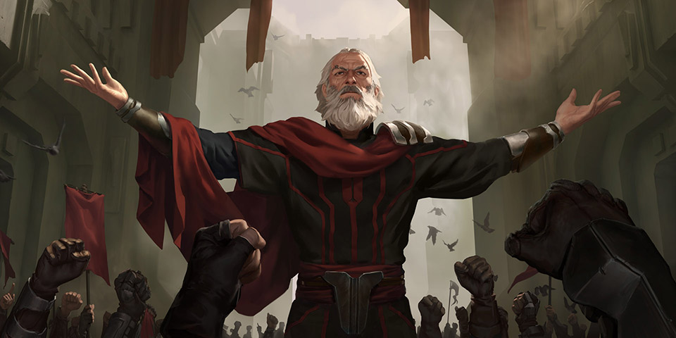

白鹿迷殇

滑动继续

出去找木吉的有:
滑动继续
黄昏前巫医卡布雷拉还是决定再去找一下木吉，结果他在丛林深处找到了木吉，并召集了大家过去，
可怜的木吉全身披着白鹿皮外套倒在了林子里，背部有一处拔掉了箭矢的箭伤，
伤口周围并无什么血迹，表情狰狞，周围除了木吉自己箭囊里的箭，并没发现别的箭矢。
老祭司看过以后确认他就是因为这处箭伤中毒而死，而毒剂正是全部落大部分人都涂在箭矢上的传统剧毒药剂，
死亡时间根据祭司多年处理动物的经验，确定在正午之前。
另外，因为木吉所在的地方周围正好都是裸露的泥土没什么树叶和植被，现场除了巫医和其他过来的人，还发现了3组脚印，
一组较小的比较深，另外两组一样大，其中一组比较深，一组比较浅，应该都是木吉之后留下来的，小的那组可以确定是木吉自己的。
【传闻】
传闻1：祭典虽然每年都有开展，大家也都很重视，但献祭白鹿的确十年都没有进行过了，木吉觉得做到这十年都没人能做到的事，更能证明他的能力。
现在简化的祭典流程也就是50多号青壮年围着部落广场中央的图腾一起跳一支舞，并插上自己的箭，基本不用两个小时就结束了。
传闻2：木吉狩猎的诀窍就在于他十分擅长模仿动物的鸣叫声。
今早有人看到他出去前拿走了挂在公所的白鹿皮，也就是现在还披在他身上这件，这还是上一次献祭时留下的。
传闻3：今天早上下了场小雨，还好在正午祭典前及时停了下来，要不大家可要冒雨进行了。
传闻4：虽然说部落现在的主要经济来源是接待络绎不绝从外地或外国前来拍摄野生纪录片的摄制组，但还是保留了部分渔猎的习俗，
部落公所也有给大家统一派发装备。虽然个别成年男子日常戴上一些狩猎工具更多是为了装饰，但如果要一个人进入丛林的时候，这还是必要的。
传闻5：部落捕猎用的毒剂的确对人对动物都是剧毒的，但只要加热煮熟就可以破坏毒性了，因此大家没有生吃猎物的习惯。
另外族里的毒剂是不会改变血液状态的神经毒素。
传闻6：十年前的白鹿是金阁的父亲银阁和木吉的父亲铁吉捕获的，那是一头怀了孕的母鹿，银阁在解剖完母鹿后还不顾反对把小鹿也给生剥了皮，
对此大家一直褒贬不一，但族长却从没说过什么。不久后，银阁和铁吉的意外身亡给这事蒙上了一层诅咒的传言。
不过，木吉这一代人年轻人因为多多少少受过一些外来的科学教育，并不相信这些，反而对古老传统的形式本身抱有推崇态度。
【传言】
